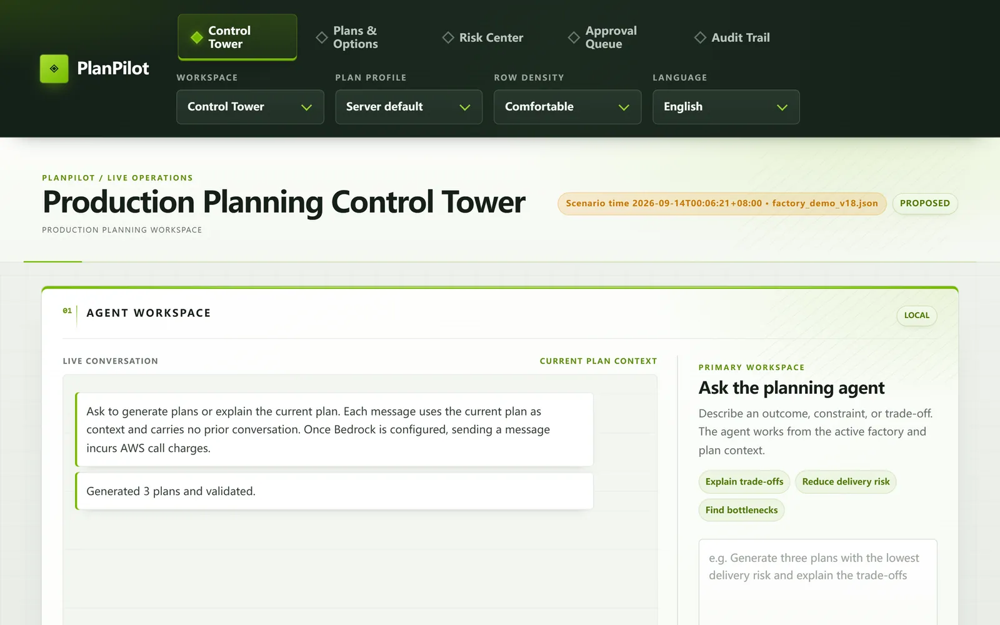

A planning agent that can’t approve its own plans
PlanPilot lets factory planners ask for a production schedule in plain English. A Claude model interprets and explains; deterministic code builds, checks and gates every plan.
Spreadsheets can’t be audited
Planners at small manufacturers juggle orders, machines, materials and worker skills in spreadsheets. Plans are slow to build, impossible to reproduce, and nobody can say afterwards why a schedule was chosen. Putting an LLM in charge would be faster, but its numbers can’t be trusted. We wanted the speed of a conversation with the guarantees of an audited system.
The model talks. The code decides.
Only one step touches the language model, and it never produces a number that reaches a plan.
- AskPlanner describes the goal in plain English
- InterpretClaude returns a JSON intent, never a schedule
- SolveCP-SAT in 5 ordered stages, fixed seed
- ValidateIndependent checker: 13 constraints, KPIs, digest
- ApproveServer-routed roles, expiry, invalidation
- PublishIdempotent, bound to the approved digest
Language model (Claude Sonnet 4.5 on Bedrock)Deterministic code
Three calls that shaped it
-
The LLM proposes, the solver decides
- Instead of
- Letting the model write the schedule.
- Because
- A model’s output can’t be proven feasible. A constraint solver’s can.
-
A second opinion, in code
- Instead of
- Trusting whatever the solver returns.
- Because
- A separately written validator catches bugs in the first. Any mismatch fails closed.
-
Approvals bind to an exact plan
- Instead of
- Editable plan records.
- Because
- Plans are immutable and digest-bound. Regenerate one and its old approvals are void.
What planners and managers see



What I built
- Runtime authority. The single write path for plans: plan versions and approval state commit in one atomic SQLite transaction, so an approved plan can’t drift from the one reviewed.
- Independent validator. Recomputes all 13 hard constraints, material reservations and KPIs for every schedule.
- Scheduling engine. Reworked the CP-SAT model into five lexicographic stages (unscheduled, late orders, lateness, skills, cost) with a fixed seed.
- LLM binding & hardening. Pinned the agent to Claude Sonnet 4.5 with JSON-only intents, added tool-error middleware, ran a security audit and fixed its findings, and built the 17-sheet Excel import with record-level quarantine.
In numbers
- 935automated tests, none of which call the model or the network
- 13hard constraints re-checked by the independent validator
- 5ordered solver stages, fixed seed: same input, same plan
- 6+adversarial review rounds on the plan store before the deadline
One lesson I’ll keep: when an early “30 of 30 evaluation cases passed” claim turned out not to be backed by evidence, we retracted it in writing and rebuilt the evaluation gate. Auditors don’t sign off on numbers they can’t trace, and neither should engineers.